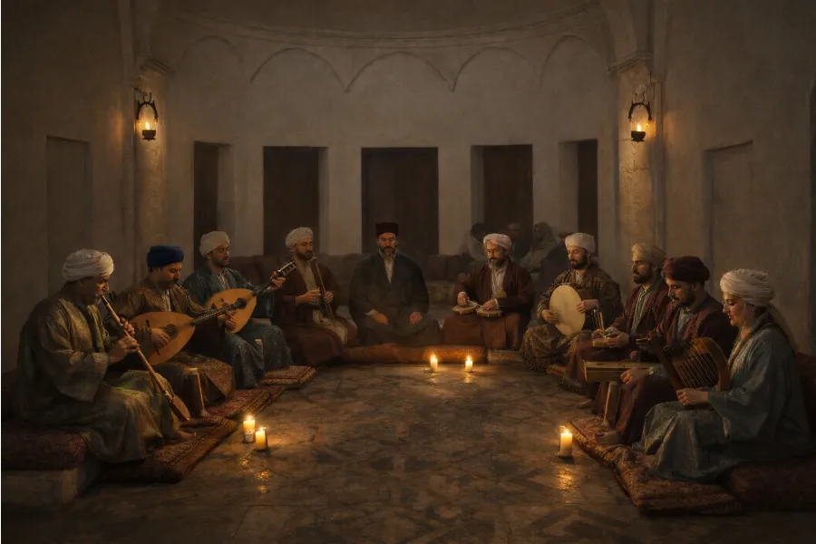
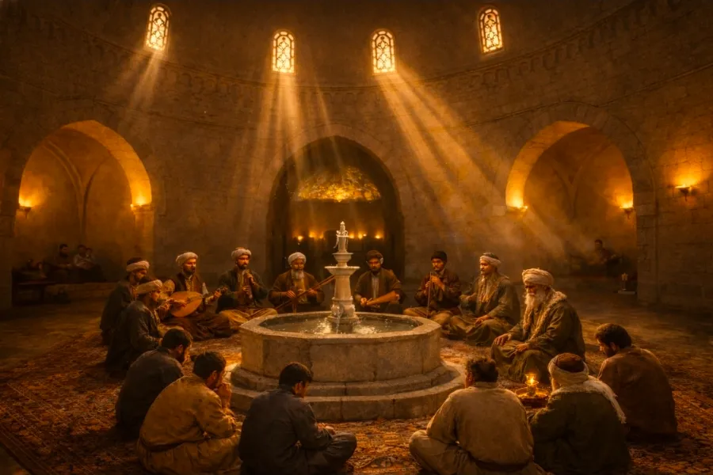

"SANAT VE TIP ARASINDA BİR KÖPRÜ"
Müzikle tedavi, çok eski çağlardan beri çeşitli toplumlarda yardımcı tedavi araçlarından biri olarak kullanılmıştır. Türk toplumlarında da Orta Asya’dan ve Şamanlardan başlayan bu gelenek, oradan Selçuklu Darüşşifaları aracılığıyla Anadolu’ya da gelmiştir. Şam’da bulunan Nurettin Zengi Darüşşifası bunun bilinen ilk örneklerinden biridir.
Edirne Sultan II. Bayezid Darüşşifası musikiyle hasta tedavisinin yapıldığı seçkin kurumlardan biridir. Özellikle hastane mimarisinde bir müzik sahnesinin düşünülüp uygulanmış olması son derece ilginçtir. 10 kişiden oluşan hanende ve sazende grubu haftanın belirli günlerinde bu sahnede yer alır ve çoğu müzisyen olan hekimlerin önerisiyle her hastalığa göre farklı makamlar çalıp söylerdi.

Osmanlı tıbbında müzik, yalnızca bir sanat değil; aynı zamanda tedavinin önemli bir parçası olarak kabul edilmiştir. Şair-hekim Şuuri Hasan Efendi (ö. 1639), “Tâdilü’l-Emzice” adlı eserinde müzik makamlarının insan sağlığı üzerindeki etkilerini ayrıntılı biçimde ele almıştır. Her makamın, insan ruhu ve bedeni üzerinde farklı etkiler oluşturduğuna inanılmış; bu nedenle hastalıklara göre özel makamlar kullanılmıştır.
Osmanlı hekimliğinde belirli rahatsızlıklar için önerilen bazı makamlar ve etkileri şunlardır. Aşağıdaki listeden makamları dinleyebilir, tedavi alanlarını inceleyebilirsiniz:
| Makam | Tedavi Ettiği Durum / Etkisi | Dinle |
|---|---|---|
| Rast Makamı | Felç ve sinirsel rahatsızlıklara iyi gelir. | |
| Irak Makamı | Hararetli (ateşli) mizaca, sersam (beyin iltihabı) ve çarpıntıya faydalıdır. | |
| İsfahan Makamı | Zihni açar, zekâyı güçlendirir ve hafızayı tazeler. | |
| Zirefkend Makamı | Sırt ve eklem ağrıları ile kulunç tedavisinde etkilidir. | |
| Rehavi Makamı | Baş ağrısını hafifletir. | |
| Büzürk Makamı | Ateşli hastalıklara iyi gelir; vesvese, korku ve zihinsel bulanıklığı giderir. | |
| Neva Makamı | Kadın hastalıklarına iyi geldiği kabul edilir. | |
| Zengûle Makamı | Kalp rahatsızlıklarında kullanılır. | |
| Hicaz Makamı | İdrar zorluklarına iyi gelir, uyarıcı etkisi vardır. | |
| Buselik Makamı | Bel ve kulunç ağrılarını hafifletir. | |
| Uşşak Makamı | Kalp, karaciğer, mide hastalıkları ve sıtmaya karşı faydalıdır. |

Bu yaklaşım, Osmanlı’da tedavinin yalnızca fiziksel değil, aynı zamanda ruhsal bir süreç olarak ele alındığını gösterir. Müzik makamlarıyla yapılan bu tedavi anlayışı, sanat ile tıbbın iç içe geçtiği özgün ve ileri bir sağlık kültürünün önemli bir yansımasıdır.